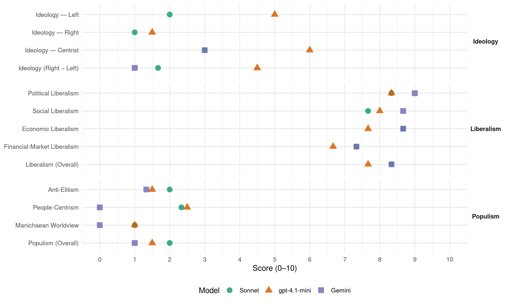

HNS (Croatia, 2020)
manifesto_id 81712_202007
Get full text: This site shows derived annotations and short verbatim quotes only. The full manifesto text is © Manifesto Project / WZB — obtain it via manifesto-project.wzb.eu using the manifesto_id above.
Headline scores
| Dimension | Sonnet | gpt-4.1-mini | Gemini |
|---|---|---|---|
| Populism (Overall) | 2.0 | 1.5 | 1.0 |
| Anti-Elitism | 2.0 | 1.5 | 1.3 |
| People-Centrism | 2.3 | 2.5 | 0.0 |
| Manichaean Worldview | 1.0 | 1.0 | 0.0 |
| Ideology (Right − Left) | 1.7 | 4.5 | 1.0 |
| Liberalism (Overall) | 8.3 | 7.7 | 8.3 |
| Political Liberalism | 8.3 | 8.3 | 9.0 |
| Social Liberalism | 7.7 | 8.0 | 8.7 |
| Economic Liberalism | 8.7 | 7.7 | 8.7 |
| Financial-Market Liberalism | 7.3 | 6.7 | 7.3 |
Evidence per dimension
Economic Liberalism
Gemini · score 9.0 · verified · chunk 1
“sloboda tržišta i poduzetništva prijeko”
demokracije, a pravo vlasništva, sloboda tržišta i poduzetništva prijeko su potrebni preduvjeti za ostvarenje
Gemini · score 9.0 · verified · chunk 2
“smanjenje poreznih opterećenja na rad”
Te politike neizostavno trebaju uključiti: nastavak fiskalne konsolidacije uz smanjenje poreznih opterećenja na rad i na kapital
Gemini · score 8.0 · verified · chunk 3
“slobodnog tržišnog gospodarstva”
omogućuje stabilan okvir za razvoj građanskog društva i slobodnog tržišnog gospodarstva.
gpt-4.1-mini · score 8.0 · verified · chunk 1
“HNS snažno zagovara ekonomske slobode, što znači smanjivanje utjecaja države na tržišne tijekove i funkcioniranje gospodarstva”
HNS snažno zagovara ekonomske slobode, što znači smanjivanje utjecaja države na tržišne tijekove i funkcioniranje gospodarstva. Pritom se posebno zalaže za što manje fiskalno opterećenje gospodarskih subjekata, vladavinu prava, uvođenje eura, ukidanje regulatornih prepreka poduzetništvu, fleksibilnost tržišta rada i općenito što veću slobodu tržišta.
gpt-4.1-mini · score 7.0 · verified · chunk 2
“smanjenje poreznih opterećenja na rad i na kapital”
To, prije svega, podrazumijeva mjere smanjenja poreznih opterećenja na rad i na kapital, budući da se time izravno potiče gospodarska aktivnost, poglavito investicije, proizvodnja, zaposlenost i izvoz.
gpt-4.1-mini · score 8.0 · verified · chunk 3
“poticanje razvoja ovog sektora jedan od glavnih političkih ciljeva”
…poticanje razvoja ovog sektora jedan od glavnih političkih ciljeva. 5.8.2. Prostorno planiranje i društveni razvoj Prostorno planiranje označava zemljopisni izraz ekonomske, socijalne, kulturne, energetske, transportne i ekološke politike društva…
Sonnet · score 9.0 · verified · chunk 1
“slobodu tržišta i poduzetništva”
Država bi trebala osigurati slobodu tržišta i poduzetništva, uzdržavajući se od interveniranja većeg od potrebnoga za održanje stabilnosti gospodarstva
Sonnet · score 9.0 · verified · chunk 2
“zalažemo se za manje poreza i pozdravljamo svako porezno rasterećenje”
Kao liberalna stranka zalažemo se za manje poreza i pozdravljamo svako porezno rasterećenje. Jednako tako, HNS se zalaže za cjelovita rješenja, time i za cjelovitu poreznu reformu
Sonnet · score 8.0 · verified · chunk 3
“slobodnog tržišnog gospodarstva”
osigurava djelotvorno funkcioniranje pravne države te omogućuje stabilan okvir za razvoj građanskog društva i slobodnog tržišnog gospodarstva
Financial-Market Liberalism
Gemini · score 8.0 · verified · chunk 1
“gospodarskih subjekata, vladavinu prava, uvođenje”
se posebno zalaže za što manje fiskalno opterećenje gospodarskih subjekata, vladavinu prava, uvođenje eura, ukidanje regulatornih prepreka poduzetništvu
Gemini · score 7.0 · verified · chunk 2
“spriječiti zloupotrebe banaka u odnosu”
riješiti socijalne statuse blokiranih. To znači da prvenstvenstveno treba spriječiti zloupotrebe banaka u odnosu prema građanima, kao i da se
Gemini · score 7.0 · verified · chunk 3
“investiranja i poslovanja banaka”
veće investicije, što pridonosi povećanju opsega investiranja i poslovanja banaka. Povećana financijska djelatnost pak pridonosi
gpt-4.1-mini · score 7.0 · verified · chunk 1
“za veću transparentnost u upotrebi javnih sredstava”
HNS podržava povećanje izdvajanja za znanosti i visoko obrazovanje, ali uz jasne pokazatelje uspješnosti te povećanu učinkovitost i transparentnost u upotrebi javnih sredstava.
gpt-4.1-mini · score 6.0 · verified · chunk 2
“Hrvatska banka za obnovu i razvitak mora poduzetnicima ponuditi financijske proizvode”
Potrebno je shvatiti i odlučiti da se Hrvatska banka za obnovu i razvitak (HBOR) mora pretvoriti u razvojni fond koji će financirati investicije u industriju. Hrvatska banka za obnovu i razvitak se na financijskom tržištu ne može ponašati kao komercijalna banka, već mora poduzetnicima ponuditi financijske proizvode koji će osigurati nove investicije i nova radna mjesta u industriji.
gpt-4.1-mini · score 7.0 · verified · chunk 3
“Građevinska djelatnost nužno aktivira financijski sektor budući da su građevinski projekti relativno trajniji”
…Građevinska djelatnost nužno aktivira financijski sektor budući da su građevinski projekti relativno trajniji od onih u drugim djelatnostima i zahtijevaju razmjerno veće investicije, što pridonosi povećanju opsega investiranja i poslovanja banaka…
Sonnet · score 8.0 · verified · chunk 1
“uvođenje eura, ukidanje regulatornih prepreka”
posebno zalaže za što manje fiskalno opterećenje gospodarskih subjekata, vladavinu prava, uvođenje eura, ukidanje regulatornih prepreka poduzetništvu, fleksibilnost tržišta rada
Sonnet · score 7.0 · verified · chunk 2
“HNS apsolutno podržava uvođenje eura”
kriza uzrokovana epidemijom korona virusa pokazala je da bi Hrvatska došla do jeftinijeg financiranja da je u toj situaciji bila članica eurozone, tako da, HNS apsolutno podržava uvođenje eura.
Sonnet · score 7.0 · verified · chunk 3
“financijski sektor budući da su građevinski projekti”
Građevinska djelatnost nužno aktivira financijski sektor budući da su građevinski projekti relativno trajniji od onih u drugim djelatnostima i zahtijevaju razmjerno veće investicije, što pridonosi povećanju opsega investiranja i poslovanja banaka
Political Liberalism
Gemini · score 10.0 · verified · chunk 1
“vladavinu zakona, političku i pravnu”
promiču individualne, političke i ekonomske slobode, vladavinu zakona, političku i pravnu jednakost, toleranciju i poštivanje razlika
Gemini · score 8.0 · verified · chunk 2
“proširuje prostor građanske participacije”
izborima, referendumima, raznim inicijativama. Sve to u konačnici proširuje prostor građanske participacije. Ona društva koja ne prate
Gemini · score 9.0 · verified · chunk 3
“razvoja liberalne demokracije kao općeg”
obnove povjerenja građana u institucije. Ono je nužan uvjet razvoja liberalne demokracije kao općeg okvira društva u kakvom
gpt-4.1-mini · score 9.0 · verified · chunk 1
“vladavinu prava, zaštitu ljudskih i građanskih prava te sigurnosti građana”
Za ostvarenje tog načela HNS se zalaže za transparentan sustav vlasti u kojem su zaštićena prava svih građana uz ograničenje i nadzor moći vlasti, vladavinu prava, zaštitu ljudskih i građanskih prava te sigurnosti građana.
gpt-4.1-mini · score 7.0 · verified · chunk 2
“Pravo na obrazovanje i sloboda izbora studija i zanimanja demokratsko su pravo koje država treba osigurati”
Pravo na obrazovanje i sloboda izbora studija i zanimanja demokratsko su pravo koje država treba osigurati. U tom smislu, diversifikacija visokog obrazovanja, onog javnog i privatnog, te sloboda organizacije svih vrsta obrazovnih programa dio su te slobode i prava, koji država treba omogućiti.
gpt-4.1-mini · score 9.0 · verified · chunk 3
“HNS stoga teži reformi pravosuđa radi obnove povjerenja građana u institucije”
…nužni su uvjeti za postizanje ovog strateškog cilja. HNS stoga teži reformi pravosuđa radi obnove povjerenja građana u institucije. Ono je nužan uvjet razvoja liberalne demokracije kao općeg okvira društva u kakvom članovi…
Sonnet · score 9.0 · verified · chunk 1
“vladavinu zakona, političku i pravnu jednakost”
promiču individualne, političke i ekonomske slobode, vladavinu zakona, političku i pravnu jednakost, toleranciju i poštivanje razlika, građanska prava i odgovornosti
Sonnet · score 8.0 · verified · chunk 2
“Pravo na obrazovanje i sloboda izbora studija”
Pravo na obrazovanje i sloboda izbora studija i zanimanja demokratsko su pravo koje država treba osigurati.
Sonnet · score 8.0 · verified · chunk 3
“jačanju liberalno-demokratskih vrijednosti u političkom sustavu”
može realizirati svoje javne politike i pridonijeti kvaliteti i učinkovitosti izvršne vlasti te jačanju liberalno-demokratskih vrijednosti u političkom sustavu i društvu u cjelini
Liberalism (Overall)
Gemini · score 9.0 · verified · chunk 1
“reafirmirao njezin liberalno-demokratski identitet”
političkog djelovanja i reafirmirao njezin liberalno-demokratski identitet. Spremni smo i odlučni prilagoditi
Gemini · score 8.0 · verified · chunk 2
“smanjenje poreznih opterećenja na rad”
Te politike neizostavno trebaju uključiti: nastavak fiskalne konsolidacije uz smanjenje poreznih opterećenja na rad i na kapital
Gemini · score 8.0 · verified · chunk 3
“vrijednosti liberalne demokracije za koje”
nisu u suprotnosti s temeljnim načelima stranke i vrijednostima liberalne demokracije za koje se zalaže.
gpt-4.1-mini · score 8.0 · verified · chunk 1
“vladavinu prava, zaštitu ljudskih i građanskih prava te sigurnosti građana”
Za ostvarenje tog načela HNS se zalaže za transparentan sustav vlasti u kojem su zaštićena prava svih građana uz ograničenje i nadzor moći vlasti, vladavinu prava, zaštitu ljudskih i građanskih prava te sigurnosti građana.
gpt-4.1-mini · score 7.0 · verified · chunk 2
“Pravo na obrazovanje i sloboda izbora studija i zanimanja demokratsko su pravo koje država treba osigurati”
Pravo na obrazovanje i sloboda izbora studija i zanimanja demokratsko su pravo koje država treba osigurati. U tom smislu, diversifikacija visokog obrazovanja, onog javnog i privatnog, te sloboda organizacije svih vrsta obrazovnih programa dio su te slobode i prava, koji država treba omogućiti.
gpt-4.1-mini · score 8.0 · verified · chunk 3
“HNS stoga teži reformi pravosuđa radi obnove povjerenja građana u institucije”
…nužni su uvjeti za postizanje ovog strateškog cilja. HNS stoga teži reformi pravosuđa radi obnove povjerenja građana u institucije. Ono je nužan uvjet razvoja liberalne demokracije kao općeg okvira društva u kakvom članovi…
Sonnet · score 9.0 · verified · chunk 1
“individualnih, političkih i ekonomskih sloboda”
Temeljeći se na tradiciji zapadne liberalne demokracije, članovi stranke promiču individualne, političke i ekonomske slobode, vladavinu zakona, političku i pravnu jednakost
Sonnet · score 8.0 · verified · chunk 2
“HNS kao liberalna stranka protivi svim oblicima zabrana”
HNS se kao liberalna stranka protivi svim oblicima zabrana, pa tako i zabrani rada nedjeljom. Smatramo da rad nedjeljom nije nešto što bi trebala regulirati država, već isključivo zakoni tržišta.
Sonnet · score 8.0 · verified · chunk 3
“razvoja liberalne demokracije kao općeg okvira društva”
To je povjerenje ozbiljno narušeno. HNS stoga teži reformi pravosuđa radi obnove povjerenja građana u institucije. Ono je nužan uvjet razvoja liberalne demokracije kao općeg okvira društva u kakvom članovi, simpatizeri i glasači HNS-a žele živjeti
Anti-Elitism
Gemini · score 1.0 · verified · chunk 1
“populizma i destrukcije – HNS nastoji”
konkretne rezultate umjesto ideoloških sukoba i izazivanja krize po svaku cijenu, populizma i destrukcije – HNS nastoji biti predvodnikom nove i drukčije politike
Gemini · score 3.0 · verified · chunk 2
“borbe protiv korupcije i varanja”
vratiti povjerenje u sustav odgoja i obrazovanja. Ovakve i slične mjere borbe protiv korupcije i varanja trebaju i dalje biti u fokusu
Gemini · score 0.0 · verified · chunk 3
“odmak od prakse ideološke isključivosti”
pokazati svoju dosljednost u ostvarenju javnog interesa i dobrobiti hrvatskih građana i društva u cjelini te odmak od prakse ideološke isključivosti, diskreditacija političkih suparnika i moraliziranja politike
gpt-4.1-mini · score 1.0 · verified · chunk 1
“HNS ne podliježe populizmu niti se koristi populističkom retorikom”
HNS se ne ustručava javno izreći ono što misli da je ispravno i preuzeti vodstvo, čak i kad to nije ono što bi ljudi trenutno željeli čuti i zbog čega bi mogli steći kratkotrajnu podršku. HNS se nastoji dosljedno držati naših temeljnih vrijednosti. HNS ne podliježe populizmu niti se koristi populističkom retorikom, neutemeljenim i lažnim obećanjima s ciljem pridobivanja političke naklonosti i odriče se potrebe svidjeti se građanima pod svaku cijenu.
gpt-4.1-mini · score 2.0 · verified · chunk 2
“izostanak političke volje vlasti i prakse preferiranja održanja socijalnog mira”
To je, prije svega, zbog izostanka političke volje vlasti i prakse preferiranja održanja socijalnog mira nasuprot možebitno politički riskantnim reformskih potezima koji bi kratkoročno doveli određene socijalne skupine u manje povoljan položaj (te posljedično vodili padu političke potpore njihovim akterima), ali dugoročno većinu društva u znatno bolji položaj, budući da bi ojačala gospodarska osnova društva.
Sonnet · score 2.0 · verified · chunk 1
“populizma i destrukcije”
racionalnu i konstruktivnu politiku te konkretne rezultate umjesto ideoloških sukoba i izazivanja krize po svaku cijenu, populizma i destrukcije – HNS nastoji biti predvodnikom
Sonnet · score 2.0 · verified · chunk 2
“snažan utjecaj države i glomazne javne uprave koji guše”
od lošeg modela privatizacije do nekonzistentnih ekonomskih i drugih javnih politika koje su tome pridonijele (snažan utjecaj države i glomazne javne uprave koji guše uspostavu slobodnih tržišnih odnosa i poduzetništva
Sonnet · score 2.0 · verified · chunk 3
“politiziranost javne uprave upućuje na izostanak demokratskih standarda”
politiziranost javne uprave upućuje na izostanak demokratskih standarda i instrumentalizaciju javne uprave kao općeg dobra od političke vlasti, redovito za ostvarenje partikularnih interesa (klijentelizam, nepotizam, protekcija, korupcija)
Ideology — Centrist
Gemini · score 3.0 · verified · chunk 2
“borbe protiv korupcije i varanja”
vratiti povjerenje u sustav odgoja i obrazovanja. Ovakve i slične mjere borbe protiv korupcije i varanja trebaju i dalje biti u fokusu
gpt-4.1-mini · score 8.0 · verified · chunk 1
“Promovirajući dijalog i kompromis, suradnju i konsenzus oko zajedničkih politika”
Promovirajući dijalog i kompromis, suradnju i konsenzus oko zajedničkih politika, racionalnu i konstruktivnu politiku te konkretne rezultate umjesto ideoloških sukoba i izazivanja krize po svaku cijenu, populizma i destrukcije – HNS nastoji biti predvodnikom nove i drukčije politike, one koja vodi stabilnosti političke vlasti i djelovanju na programima društvenog razvoja.
gpt-4.1-mini · score 4.0 · verified · chunk 2
“HNS vodi politiku kompromisa i suradnje”
HNS vodi politiku kompromisa i suradnje, a porezna politika mora imati za cilj bolji život građana.
Sonnet · score 4.0 · verified · chunk 1
“dijalog i kompromis, suradnju i konsenzus”
Promovirajući dijalog i kompromis, suradnju i konsenzus oko zajedničkih politika, racionalnu i konstruktivnu politiku te konkretne rezultate
Sonnet · score 2.0 · verified · chunk 2
“HNS vodi politiku kompromisa i suradnje”
HNS vodi politiku kompromisa i suradnje, a porezna politika mora imati za cilj bolji život građana.
Sonnet · score 3.0 · verified · chunk 3
“inkluzivnost, suradnju i dogovor nasuprot isključivosti”
HNS će pritom zastupati inkluzivnost, suradnju i dogovor nasuprot isključivosti, konfliktu, ideološkim i svim drugim podjelama i zalagati se za konstruktivnu politiku nasuprot destrukciji
Ideology — Left
gpt-4.1-mini · score 7.0 · verified · chunk 1
“HNS snažno zagovara ekonomske slobode, što znači smanjivanje utjecaja države na tržišne tijekove”
HNS snažno zagovara ekonomske slobode, što znači smanjivanje utjecaja države na tržišne tijekove i funkcioniranje gospodarstva. Pritom se posebno zalaže za što manje fiskalno opterećenje gospodarskih subjekata, vladavinu prava, uvođenje eura, ukidanje regulatornih prepreka poduzetništvu, fleksibilnost tržišta rada i općenito što veću slobodu tržišta.
gpt-4.1-mini · score 3.0 · verified · chunk 2
“smanjenje poreznih opterećenja na rad i na kapital”
Njihov konačni cilj jest jačanje nacionalnog gospodarstva i stvaranje pretpostavki uravnoteženom ostvarivanju gospodarskog rasta. Usprkos nedvojbenoj potrebi koncipiranja i provedbe tih reformskih politika i mjera, uočljiv je njihov izostanak tijekom dugog razdoblja. To je, prije svega, zbog izostanka političke volje vlasti i prakse preferiranja održanja socijalnog mira nasuprot možebitno politički riskantnim reformskih potezima koji bi kratkoročno doveli određene socijalne skupine u manje povoljan položaj (te posljedično vodili padu političke potpore njihovim akterima), ali dugoročno većinu društva u znatno bolji položaj, budući da bi ojačala gospodarska osnova društva.
Sonnet · score 3.0 · verified · chunk 1
“solidarnosti i socijalna sigurnost”
Vrijednosnu osnovu političkog djelovanja Hrvatske narodne stranke čine: dostojanstvo, sloboda, jednakost, vladavina prava i zaštita ljudskih i građanskih prava, tolerancija, slobodno tržište i poduzetništvo, solidarnosti i socijalna sigurnost
Sonnet · score 1.0 · verified · chunk 2
“smanjenje socioekonomskih razlika te veće i kvalitetnije uključivanje”
Njihov primarni cilj je smanjenje socioekonomskih razlika te veće i kvalitetnije uključivanje socioekonomski depriviranih (građani s niskim primanjima, nezaposleni, osobe s invaliditetom
Sonnet · score 2.0 · verified · chunk 3
“osigurati mjesečne sportske vaučere za svu osnovnoškolsku djecu”
Država mora odlučiti da je razvoj sporta od strateške važnosti za Republiku Hrvatsku i uvesti mjere kojima jasno i nedvosmisleno daje podršku sportu – osigurati mjesečne sportske vaučere za svu osnovnoškolsku djecu
Ideology (Right − Left)
Gemini · score 0.0 · verified · chunk 1
“HNS se ne služi populističkom”
HNS se ne služi populističkom retorikom i moraliziranjem politike, već
Gemini · score 2.0 · verified · chunk 2
“borbe protiv korupcije i varanja”
vratiti povjerenje u sustav odgoja i obrazovanja. Ovakve i slične mjere borbe protiv korupcije i varanja trebaju i dalje biti u fokusu
gpt-4.1-mini · score 6.0 · verified · chunk 1
“Promovirajući dijalog i kompromis, suradnju i konsenzus oko zajedničkih politika”
Promovirajući dijalog i kompromis, suradnju i konsenzus oko zajedničkih politika, racionalnu i konstruktivnu politiku te konkretne rezultate umjesto ideoloških sukoba i izazivanja krize po svaku cijenu, populizma i destrukcije – HNS nastoji biti predvodnikom nove i drukčije politike, one koja vodi stabilnosti političke vlasti i djelovanju na programima društvenog razvoja.
gpt-4.1-mini · score 3.0 · verified · chunk 2
“HNS vodi politiku kompromisa i suradnje”
HNS vodi politiku kompromisa i suradnje, a porezna politika mora imati za cilj bolji život građana. Kao liberalna stranka zalažemo se za manje poreza i pozdravljamo svako porezno rasterećenje.
Sonnet · score 2.0 · verified · chunk 1
“liberalno-demokratski identitet”
HNS novim političkim programom želi potvrditi svoj liberalno-demokratski identitet, učvrstiti svoja politička stajališta
Sonnet · score 1.0 · verified · chunk 2
“HNS kao liberalna stranka smatra”
Ključna poruka HNS-a je stabilnija, slobodnija i sigurnija budućnost Hrvatske. HNS kao liberalna stranka smatra da se Hrvatska voli radom
Sonnet · score 2.0 · verified · chunk 3
“odmak od prakse ideološke isključivosti”
HNS će pokazati svoju dosljednost u ostvarenju javnog interesa i dobrobiti hrvatskih građana i društva u cjelini te odmak od prakse ideološke isključivosti, diskreditacija političkih suparnika i moraliziranja politike
Ideology — Right
gpt-4.1-mini · score 1.0 · verified · chunk 1
“Kao glavnu opasnost u nastupajućem razdoblju vidimo radikalizaciju političkog spektra, naročito na njegovoj desnoj polovici”
Kao glavnu opasnost u nastupajućem razdoblju vidimo radikalizaciju političkog spektra, naročito na njegovoj desnoj polovici, koja bi RH odvela u pravcu zemalja poput Poljske, Mađarske, Srbije ili Turske.
gpt-4.1-mini · score 2.0 · verified · chunk 2
“HNS se kao liberalna stranka protivi svim oblicima zabrana, pa tako i zabrani rada nedjeljom”
HNS se kao liberalna stranka protivi svim oblicima zabrana, pa tako i zabrani rada nedjeljom. Smatramo da rad nedjeljom nije nešto što bi trebala regulirati država, već isključivo zakoni tržišta.
Sonnet · score 1.0 · verified · chunk 1
“nacionalnim interesima hrvatskog društva”
liberalne demokracije, koju stranka promiče u svim segmentima svojeg djelovanja vodeći računa o nacionalnim interesima hrvatskog društva i svih njegovih sastavnica
Sonnet · score 1.0 · verified · chunk 3
“nacionalni zanos i naboj za reprezentacijom”
Hrvatska mora znati iskoristiti popularnost sporta kod velikog broja stanovnika, talent sportaša, tradiciju, vrhunske sportske rezultate, planetarno poznate sportaše, sposobne i priznate trenere, nacionalni zanos i naboj za reprezentacijom
Manichaean Worldview
Gemini · score 0.0 · verified · chunk 3
“nasuprot isključivosti, konfliktu, ideološkim”
HNS će pritom zastupati inkluzivnost, suradnju i dogovor nasuprot isključivosti, konfliktu, ideološkim i svim drugim podjelama i zalagati se za konstruktivnu politiku
gpt-4.1-mini · score 1.0 · verified · chunk 1
“Suprotstavljanje tim akterima i takvim političkim stajalištima znatno utjecalo na podizanje demokratske svijesti”
Mnoge prepreke na tom putu, pa i političke diskvalifikacije od različitih, mahom antiliberalnih, autoritarnih i nedemokratskih političkih aktera, samo su ojačali HNS u tim nastojanjima. Štoviše, upravo je suprotstavljanje tim akterima i takvim političkim stajalištima znatno utjecalo na podizanje demokratske svijesti, podjednako građana i političkih aktera.
gpt-4.1-mini · score 1.0 · verified · chunk 2
“izostanak političke volje vlasti i prakse preferiranja održanja socijalnog mira”
To je, prije svega, zbog izostanka političke volje vlasti i prakse preferiranja održanja socijalnog mira nasuprot možebitno politički riskantnim reformskih potezima koji bi kratkoročno doveli određene socijalne skupine u manje povoljan položaj (te posljedično vodili padu političke potpore njihovim akterima), ali dugoročno većinu društva u znatno bolji položaj, budući da bi ojačala gospodarska osnova društva.
Sonnet · score 1.0 · verified · chunk 1
“radikalizaciju političkog spektra, naročito na njegovoj desnoj polovici”
Kao glavnu opasnost u nastupajućem razdoblju vidimo radikalizaciju političkog spektra, naročito na njegovoj desnoj polovici, koja bi RH odvela u pravcu zemalja poput Poljske, Mađarske
Sonnet · score 1.0 · verified · chunk 2
“Taj začarani krug hrvatske politike stoga je nužno prekinuti”
ali dugoročno većinu društva u znatno bolji položaj, budući da bi ojačala gospodarska osnova društva. Taj začarani krug hrvatske politike stoga je nužno prekinuti.
Sonnet · score 1.0 · verified · chunk 3
“populističke retorike i ideoloških podjela”
HNS će svoj politički kredibilitet i svoju poziciju legitimirati na osnovi konkretnih rezultata i izvedivih javnih politika, a ne na osnovi populističke retorike i ideoloških podjela
People-Centrism
Gemini · score 0.0 · verified · chunk 3
“odmak od prakse… moraliziranja politike”
hrvatskih građana i društva u cjelini te odmak od prakse ideološke isključivosti, diskreditacija političkih suparnika i moraliziranja politike, što je umnogome obilježje
gpt-4.1-mini · score 2.0 · verified · chunk 1
“Načelo kompromisa (prijeko potrebno u postizanju optimalnog rezultata) za HNS temelj političkog djelovanja”
Cilj je ostvarenje općeg interesa i dobrobiti u najvišem mogućem opsegu oko kojeg treba postići političku suglasnost. Stoga je načelo kompromisa (prijeko potrebno u postizanju optimalnog rezultata) za HNS temelj političkog djelovanja. Naime, politika je djelovanje za opće dobro i ostvarenje javnog interesa, stoga treba biti plemenita i časna djelatnost.
gpt-4.1-mini · score 3.0 · verified · chunk 2
“HNS kao liberalna stranka smatra da se Hrvatska voli radom”
Ključna poruka HNS-a je stabilnija, slobodnija i sigurnija budućnost Hrvatske. HNS kao liberalna stranka smatra da se Hrvatska voli radom i to smo reformskim tempom u ministarstvima obrazovanja i graditeljstva u proteklom mandatu i dokazali.
Sonnet · score 3.0 · verified · chunk 1
“uvijek vodeći računa o najboljem mogućem promicanju i zaštiti interesa svih građana RH”
na lokalnoj, nacionalnoj, regionalnoj, europskoj i svjetskoj razini, uvijek vodeći računa o najboljem mogućem promicanju i zaštiti interesa svih građana RH
Sonnet · score 2.0 · verified · chunk 2
“naš zadatak je što bolje odraditi posao za građane”
Naš zadatak je što bolje odraditi posao za građane, poduzetnike i za realni sektor i kao dio Vlade ili Sabora osigurati Hrvatskoj što stabilniju budućnost.
Sonnet · score 2.0 · verified · chunk 3
“dobrobiti hrvatskih građana i društva u cjelini”
HNS će pokazati svoju dosljednost u ostvarenju javnog interesa i dobrobiti hrvatskih građana i društva u cjelini te odmak od prakse ideološke isključivosti
Populism (Overall)
Gemini · score 1.0 · verified · chunk 1
“HNS ne podliježe populizmu niti”
kratkotrajnu podršku. HNS ne podliježe populizmu niti se koristi populističkom retorikom, neutemeljenim
Gemini · score 2.0 · verified · chunk 2
“borbe protiv korupcije i varanja”
vratiti povjerenje u sustav odgoja i obrazovanja. Ovakve i slične mjere borbe protiv korupcije i varanja trebaju i dalje biti u fokusu
Gemini · score 0.0 · verified · chunk 3
“ne na osnovi populističke retorike”
svoju poziciju legitimirati na osnovi konkretnih rezultata i izvedivih javnih politika, a ne na osnovi populističke retorike i ideoloških podjela.
gpt-4.1-mini · score 1.0 · verified · chunk 1
“HNS ne podliježe populizmu niti se koristi populističkom retorikom”
HNS se ne ustručava javno izreći ono što misli da je ispravno i preuzeti vodstvo, čak i kad to nije ono što bi ljudi trenutno željeli čuti i zbog čega bi mogli steći kratkotrajnu podršku. HNS se nastoji dosljedno držati naših temeljnih vrijednosti. HNS ne podliježe populizmu niti se koristi populističkom retorikom, neutemeljenim i lažnim obećanjima s ciljem pridobivanja političke naklonosti i odriče se potrebe svidjeti se građanima pod svaku cijenu.
gpt-4.1-mini · score 2.0 · verified · chunk 2
“izostanak političke volje vlasti i prakse preferiranja održanja socijalnog mira”
To je, prije svega, zbog izostanka političke volje vlasti i prakse preferiranja održanja socijalnog mira nasuprot možebitno politički riskantnim reformskih potezima koji bi kratkoročno doveli određene socijalne skupine u manje povoljan položaj (te posljedično vodili padu političke potpore njihovim akterima), ali dugoročno većinu društva u znatno bolji položaj, budući da bi ojačala gospodarska osnova društva.
Sonnet · score 2.0 · verified · chunk 1
“HNS ne podliježe populizmu niti se koristi populističkom retorikom”
HNS ne podliježe populizmu niti se koristi populističkom retorikom, neutemeljenim i lažnim obećanjima s ciljem pridobivanja političke naklonosti
Sonnet · score 2.0 · verified · chunk 2
“snažan utjecaj države i glomazne javne uprave koji guše”
od lošeg modela privatizacije do nekonzistentnih ekonomskih i drugih javnih politika koje su tome pridonijele (snažan utjecaj države i glomazne javne uprave koji guše uspostavu slobodnih tržišnih odnosa
Sonnet · score 2.0 · verified · chunk 3
“a ne na osnovi populističke retorike”
HNS će svoj politički kredibilitet i svoju poziciju legitimirati na osnovi konkretnih rezultata i izvedivih javnih politika, a ne na osnovi populističke retorike i ideoloških podjela
Social Liberalism